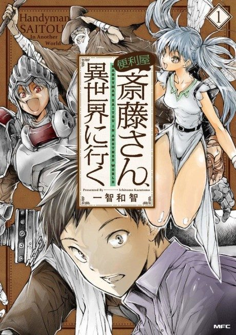

Handyman Saitou in Another World
便利屋斎藤さん、異世界に行く
After the anime, read the manga from Chapter 111.
7.2AniList score
—Animeter, no votes yet
12episodes
Rate it or report where you stopped
Anime finished. Where does the manga pick up?
Start at Chapter111
The anime concludes around chapter 110, so start at chapter 111 (continuous web numbering).
1110ongoing
Season 1Start reading here